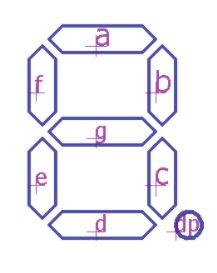
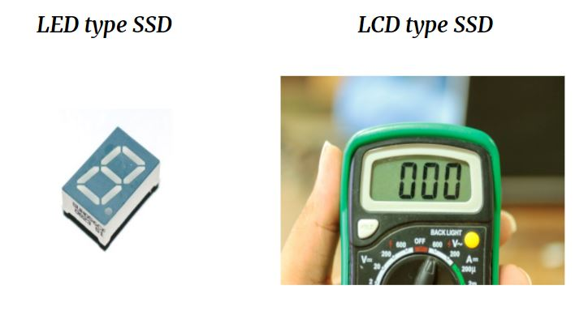

LECTURE 5¶
SEVEN SEGMENT DISPLAY(SSD)¶

WHAT IS SSD?¶
Seven Segment Display (SSD) or seven segment Indicator is an electronic device which helps display decimal numerals and English alphabets.
TYPES OF SSD¶
COMMON CATHODE SSD¶
In common cathode all the cathodes are tied to a common pin, in this case generally ground, and the LED are driven by the state of the anodes where ground is off and power is on.
COMMON ANODE SSD¶

In common anode all the anodes on the display are tied to a common pin, typically the power source, and the LED are controlled via the cathodes with ground being on and power being off.


EXERCISE¶
To make a single digit counter
HARDWARE¶
When we write digital high on pins of arduino the current flows and led’s are turned on.
SOFTWARE¶

A basic arduino code will involve two functions for sure: setup and loop. Setup function does not return any value and accepts no parameters. It is used to initialize our hardware.
Practice Problem¶
Make a four digit counter using four digit seven segment display